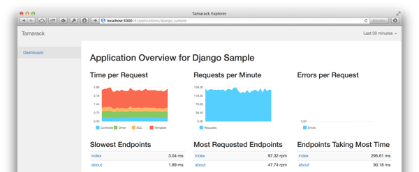

<div class="container-fluid main-callout">
  <div class="container">
    <div class="row">
      <div class="col-sm-5">
        <h1>Profile Your Web Application’s Performance with Tamarack</h1>

        <a class="sign-up" href="https://app.tamarack.io/sign-up">Create Free Account</a>

        <p class="self-host">
          &hellip;or <a href="https://github.com/mhallin/tamarack">download it and host it yourself.</a>
        </p>

      </div>

      <div class="col-sm-5 col-sm-offset-1">
        
      </div>
  </div>
</div>
